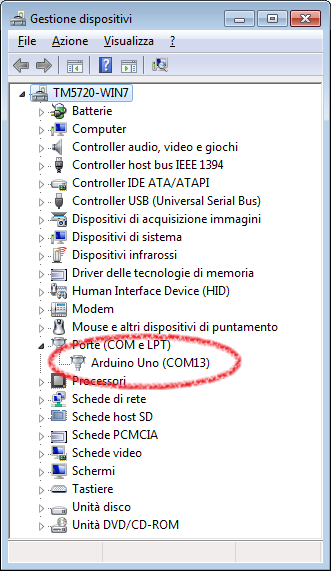
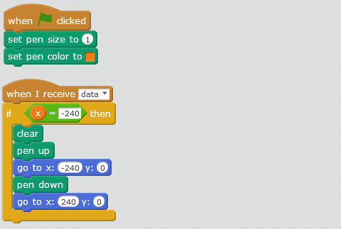

risorse | hy-srf05 con mblock
Attenzione: ho posto la massima cura ed attenzione nel redigere questi appunti; declino tuttavia ogni responsabilità per eventuali imprecisioni, errori od omissioni, così come declino ogni responsabilità per eventuali danni a cose, proprietà o persone derivanti dall'uso di questi contenuti.
Nell'ottica dello sviluppo di un percorso di avvicinamento al mondo dell'elettronica attraverso il connubio Scratch/Arduino, dopo una prima breve introduzione sull'argomento, e dopo aver affrontato il tema della calibrazione, un passo ulteriore potrebbe consistere nell'utilizzare un sensore che richiede il rispetto di un semplice protocollo di comunicazione che vada però al di là della mera acquisizione di un valore analogico o digitale. La scelta è ricaduta sul sensore ultrasonico di prossimità HY-SRF05, che ha il pregio di essere particolarmente economico.
Il sensore HY-SRF05 è un dispositivo che consente di determinare la presenza di un ostacolo e di stimarne la distanza. Il suo range operativo è di 2÷400cm, ed ha un'accuratezza di 2mm.
Il sensore HY-SRF05
Il sensore determina la distanza dell'oggetto più prossimo che gli sta davanti emettendo un breve treno di impulsi ultrasonici ed attendendo l'eco di uno di essi, secondo il principio del sonar. L'intervallo di tempo che intercorre tra l'invio del segnale e la ricezione del primo eco fornisce una misura indiretta della distanza che separa l'ostacolo dal sensore.
Il sensore HY-SRF05 dev'essere alimentato con una tensione di 5V sul pin Vcc e massa su GND. L'emissione del segnale ultrasonico viene comandata inviando un impulso elettrico della durata di almeno 10µs sul pin Trig del sensore. In corrispondenza del fronte di discesa dell'impulso di comando il sensore emette, attraverso la capsula di trasmissione, una sequenza di 8 brevi impulsi ultrasonici a 40KHz, quindi porta a 5V il pin Echo, a indicare che è iniziata l'attesa del segnale di ritorno. Alla ricezione del primo eco ultrasonico, o al trascorrere del tempo massimo – timeout – di 30ms, la linea viene riportata a 0V.
Quella appena descritta è la cosiddetta modalità standard di funzionamento, compatibile con la versione SRF04 del sensore, detta anche dual-pin, perché richiede l'uso di due pin, Trig e Echo. Se si connette il pin OUT a massa anziché lasciarlo scollegato, si attiva la modalità single-pin: il sensore in questo caso invia il segnale di eco direttamente sul pin Trig, che diventa così una linea bidirezionale — utile nel caso si utilizzino microcontrollori con un numero limitato di linee di ingresso/uscita.
Nel caso si voglia implementare un controllo continuo della presenza o della poszione di un ostacolo, è bene evitare di lanciare impulsi troppo ravvicinati tra loro, perché potrebbero creare delle interferenze e indurre il sensore all'errore. Stando alle specifiche, conviene attendere almeno 50/60ms tra una misurazione e la successiva.
Se la durata dell'impulso sul pin Echo è pari a 30ms o più, si può concludere che non c'è nessun oggetto nel raggio d'azione del sensore. Se invece l'impulso ha una durata compresa tra i 25µs e i 25ms, si può determinare la distanza dell'ostacolo applicando la seguente formula:
d = v × Δt / 2
dove d rappresenta la stima della distanza tra il sensore e l'oggetto, v è la distanza del suono nell'aria e Δt è la durata dell'impulso. Il fattore 2 a denominatore tiene conto del fatto che nell'intervallo di tempo misurato l'impulso ultrasonico ha coperto la distanza che separa il sensore dall'ostacolo due volte: una all'andata, una al ritorno.
Approssimando in prima istanza la velocità del suono nell'aria a 344m/s (in realtà dipende dalla temperatura dell'aria), desiderando inoltre esprimere la distanza in centimetri, nell'ipotesi che il tempo sia espresso in microsecondi la formula diventa:
d = 344 × Δt / 1000000 / 2 × 100
d = 0,0172 × Δt
Purtroppo nessuna delle estensioni di Scratch che comunicano con Arduino presentate qui è adatta a controllare il sensore HY-SRF05: S4A interroga Arduino ogni 75ms, mentre S2A utilizza il protocollo firmata, che nella migliore delle ipotesi può essere spinto fino a 115200 baud, il che significa una velocità di trasferimento di 1 byte ogni 600µs — senza dimenticare che firmata è un protocollo multi-byte e che l'estensione S2A è basata sul protocollo HTTP che ragionevolmente introduce un'ulteriore ritardo. Entrambe operano troppo lentamente per permettere di misurare intervalli di tempo dell'ordine delle decine di microsecondi.
mBlock è un ambiente di programmazione derivato da Scratch che integra un'estensione proprietaria per comunicare con Arduino secondo lo standard firmata. Nemmeno mBlock consente quindi il controllo diretto del sensore, tuttavia l'estensione per Arduino integrata in mBlock contiene un blocco apposito che controlla direttamente il sensore nella modalità dual-pin:
Il blocco di mBlock per dedicato al sensore ultrasonico
Abbandonata la velleità di controllare direttamente il sensore, si può perlomeno verificare quando immediato sia il suo utilizzo in mBlock.
Nota: tutti gli esperimenti sono stati condotti su Windows 7 64 bit con mBlock v. 3.4.2.
L'idea è di utilizzare il sensore ultrasonico per creare una versione del gioco Pong in cui la la racchetta viene comandata dal movimento della mano anziché dalla tastiera:
Una possibile implementazione di Pong
Controllo manuale(!) della racchetta – le due matite colorate delimitano il campo d'azione
Si è arbitrariamente deciso di fissare un campo d'azione di 10 centimetri di larghezza, posto a 10 centimetri dal sensore: muovendo la mano all'interno di questa zona si sposta di conseguenza la racchetta sullo schermo del computer.
Con una certa sorpresa, i primi esperimenti hanno evidenziato una certa “irrequietezza” della racchetta: pur mantenendo la mano ben ferma all'interno del campo d'azione, essa oscillava in modo irregolare, con tale entità da rendere praticamente impossibile il gioco.
Il circuito è di semplice realizzazione, non necessitando di alcun componente esterno:
Schema di collegamento del sensore: alimentazione, Trig sul pin 13 di Arduino, Echo sul 12.
Realizzazione pratica del circuito: filo giallo per il trigger, blu per l'eco
mBlock è liberamente scaricabile dal sito ufficiale. Al momento è disponibile solo per Windows e Mac. Non è in previsione il porting a Linux.
Una volta avviato il programma, occorre indicare il tipo di scheda utilizzato e la porta seriale alla quale è connessa: selezionare Arduino Uno dal menu , quindi selezionare la porta seriale nel sotto-menu del menu . In Windows si può procedere per tentativi, selezionando una porta alla volta tra quelle disponibili, fino a quando sulla barra del titolo della finestra principale di mBlock appare la scritta Serial Port Connected; alternativamente, si può ricorrere alla maschera Gestione dispositivi, raggiungibile da Pannello di Controllo → Sistema e sicurezza → Sistema → Gestione dispositivi:
Individuazione della porta seriale cui è connesso Arduino
Se non lo è stato fatto in precedenza, occorre innanzitutto caricare nella scheda il firmware che consente a mBlock di dialogare con Arduino: per ciò, si usa il comando Upgrade Firmware del menu . In caso di errore, riavviare il computer e ritentare.
Come ultimo passo è necessario attivare l'estensione per Arduino: nella categoria di comandi (area color verde acqua), selezionare l'estensione Arduino.
Per verificare il corretto utilizzo del sensore, si predispone un ostacolo ad una distanza nota, ad esempio 20 centimetri:
Tutto pronto per il test del sensore
Un primo sprite si occupa di acquisire la distanza misurata, la confronta con il valore atteso (20cm) e propaga la differenza tra le due; la variabile x è propedeutica alla costruzione del grafico dell'andamento del valore di discrepanza registrato:
Programma di acquisizione: notare l'attesa di 60ms dopo la lettura del sensore
Un secondo sprite si occupa di disegnare la traccia dell'andamento del valore di discrepanza:
Programma di tracciamento del valore istantaneo di discrepanza
Un terzo sprite si occupa di disegnare l'asse delle ascisse:
Programma di tracciamento dell'asse x
Avviando il programma in modalità turbo (Shift + Click sulla bandierina verde per attivarla) si ottiene il seguente risultato:
Sequenza di acquisizioni (1 pixel = 5µm)
Sovraimponendo una scala graduata sull'asse delle ordinate risulta più chiara l'entità delle oscillazioni:
Entità della variazione della misura
Una variabilità così alta non era certo attesa: supera del doppio l'accuratezza dichiarata del sensore.
Alcuni esperimenti hanno evidenziato che l'estrema instabilità delle misurazioni era dovuta alla bassa qualità dell'alimentazione che il computer forniva alla scheda Arduino attraverso il cavo USB. Collegando Arduino ad un alimentatore esterno stabilizzato, la situazione è nettamente migliorata:
Comportamento del circuito in presenza di un'alimentazione esterna
Davvero il sensore è così sensibile alle interferenze dovute agli echi dei segnali che egli stesso emette? Riducendo a zero l'attesa dopo l'acquisizione della misura, la risposta del sensore diventa:
Picchi spurii effetto delle interferenze
Constatato che la pausa va rispettata, nel caso la risposta del sensore risulti ancora troppo instabile è comunque possibile “addolcirla”, per esempio calcolando una media mobile, il cui effetto è analogo a un filtro passa-basso:
Programma di calcolo della media mobile su 7 valori
Effetto passa-basso della media mobile
Il progetto mBlock utilizzato per realizzare l'analisi è disponibile qui.
In seguito alle considerazioni fin qui fatte, è stato deciso di sabilizzare la posizione della racchetta mediante l'uso di una media mobile su 7 punti. La versione completa del progetto mBlock del Pong “ultrasonico” è disponibile qui. Prima di avviare il gioco, ricordarsi di attivare la modalità turbo!
Pagina modificata il 24/11/2016